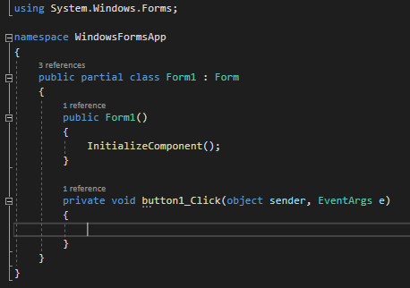

[C#] 58. ウィンドウフォーム(Window form)を作成する方法、そしてウィンドウメッセージとキュー
こんにちは。明月です。
この投稿はC#でウィンドウフォーム(Window form)を作成する方法、そしてウィンドウメッセージとキューに関する説明です。
C#という言語はMS社で開発した言語でWindow OSに環境で特化されています。つまり、C#言語で我々がよく使うウィンドウ環境でウィンドウプログラムを開発することができます。
Javaやその以外のpythonなどを通ってウィンドウプログラムを作れないということではありませんが、でも、ウィンドウがMS社の製品なのでC#からWindow APIを使うのがもっとしやすいです。
実は、C#言語を勉強することはウィンドウプログラムを作るためというのも間違ってありません。最近、ゲームエンジンでよく使うUnityも基本的に使う言語もC#です。
それなら簡単にウィンドウフォームを作成しましょう。
Visual studioを起動してプロジェクト作成します。
そうするとWindow Forms App項目が二つが出ます。
一つはCore用だし、もう一つは.Net framework用です。Core用を使っても構いないですが、Window formは基本的にWindow環境で実行するプログラムなのに、Coreを選択する必要はありません。
最近に使うWindow 10には基本的に.Net frameworkがインストールされていますね。
そしてプロジェクト名を入力してプロジェクト作成します。
それならVisual studioに基本的にWindow formが生成されています。
そのままにF5(Starting debugging)を押下するとウィンドウにウィンドウプログラムが実行されていることを確認できます。
実はここまでしてもウィンドウプログラムを一つ作ったことと同じ意味ですね。
ここで我々がウィンドウフォームにボタンを一つ追加しましょう。
Visual studioの隣を見るとToolboxがあることを確認できます。
そこでButtonを探してフォームにマウスを押下しながら引き付けます。(Drag-and-drop)
そうするとフォームにボタンが生成されたことを確認できます。
そうするとボタンをダブルクリックしましょう。
そうなるとソース画面に変わったことを確認できます。

何かを知らないですが、button1_Clickという関数がありますね。ここでクリックする時に動作するソースを実装するらしいです。
using System;
using System.Windows.Forms;
namespace WindowsFormsApp
{
public partial class Form1 : Form
{
// フォームコンストラクタ
public Form1()
{
InitializeComponent();
}
// ボタンクリックイベント
private void button1_Click(object sender, EventArgs e)
{
// メッセージボックス
MessageBox.Show("Hello world");
}
}
}
button1_Click関数の中にMessageBox.Show("Hello world")を入力してまた、F5(Starting debugging)を押下してデバックしましょう。
実行するとウィンドウプログラムが実行されてその中でボタンがあることを確認できます。ボタンをクリックするとメッセージボックスにHello worldという文字があることを確認できます。
ここまでが基本的なウィンドウプログラム作成する流れです。
ソースに関して少し詳細に説明します。
隣のエクスプローラーを見るとForm1.csファイルがあり、Form1.Desiner.csファイルとForm1.resxファイルがあります。
そしてProgram.csファイルがありますね。
まず、Program.csファイルを開くと下記通りのソースがあります。
using System;
using System.Windows.Forms;
namespace WindowsFormsApp
{
static class Program
{
// 単一スレッドアパートメント(Single-threaded apartment)のアノテーション設定
[STAThread]
// 実行関数
static void Main()
{
// これはVisualスタイルの設定すること、つまり、設定しないと昔の雰囲気のウィンドウプログラムが生成
Application.EnableVisualStyles();
// これはTextレンダリングに関する設定だが、文字の間隔設定とその他などの設定、Defaultはfalseに設定
Application.SetCompatibleTextRenderingDefault(false);
// ウィンドウプログラムのメッセージを実行する関数
Application.Run(new Form1());
}
}
}
基本的に上のソース構造はConsoleで作成した構造と同じです。つまり、プログラムはMain関数で実行することです。
改めて言えば、コンソールプロジェクトでSystem.Windows.Formsライブラリを連結して上と同じソースを作成すれば同じウィンドウプログラムが実行されるという意味です。
ここでまた、知りたいのがコンソールウィンドウはないか?と思えますが、エクスプローラーでプロジェクトをマウス右クリックするとPropertiesというメニューがあります。
クリックすると設定画面がでますが、そこでOutput typeの項目がWindows applicationになっています。
一応、配布する時にはWindows applicationに変更しなければならないですが、我々は一応開発しなければならないのでConsole Applicationに変更しましょう。
また、F5(Starting debugging)を押下してデバックするとConsoleウィンドウが出ることを確認できます。
また、ソースに戻って、Program.csファイルにはnew Form1()でインスタンスを生成してApplication.Runで実行することを確認できます。
このApplication.Runは後でまた説明します。
new Form1でインスタンスが生成されたからForm1.csを確認するべきですね。
多分、Form1.csファイルをクリックするとデザインウィンドウが表示されますね。
それでマウス右クリックしてView Codeでソースを見ましょう。
先に、我々がボタンをクリックすると実行するソースがありますね。確実に構造はForm1のクラスだし、Formクラスを継承しました。
コンストラクタではInitializeComponent関数が実行され、button1_Clickという関数があり、クリックすると実行しますね。これだけ見ると実はプログラムが理解できません。すべて自動に処理するか？プログラムでは自動っていうのはありません。すべての動作には理由があります。
そうするとForm1.Desiner.csファイルを見ましょう。
namespace WindowsFormsApp
{
partial class Form1
{
/// <summary>
/// Required designer variable.
/// </summary>
private System.ComponentModel.IContainer components = null;
/// <summary>
/// Clean up any resources being used.
/// </summary>
/// <param name="disposing">true if managed resources should be disposed; otherwise, false.</param>
// フォームが消える時に発生する関数(再定義関数)
protected override void Dispose(bool disposing)
{
if (disposing && (components != null))
{
components.Dispose();
}
base.Dispose(disposing);
}
#region Windows Form Designer generated code
/// <summary>
/// Required method for Designer support - do not modify
/// the contents of this method with the code editor.
/// </summary>
// コンストラクタから呼び出す関数
private void InitializeComponent()
{
// ボタンインスタンス生成
this.button1 = new System.Windows.Forms.Button();
// フォームレイアウト設定
this.SuspendLayout();
//
// button1
//
// ボタン位置設定
this.button1.Location = new System.Drawing.Point(24, 26);
// ボタン名
this.button1.Name = "button1";
// ボタンサイズ
this.button1.Size = new System.Drawing.Size(75, 23);
// ボタンタブのインデクス
this.button1.TabIndex = 0;
// ボタンの中のText
this.button1.Text = "button1";
// ボタンの色設定(基本ウィンドウ色)
this.button1.UseVisualStyleBackColor = true;
// イベント追加
this.button1.Click += new System.EventHandler(this.button1_Click);
//
// Form1
//
this.AutoScaleDimensions = new System.Drawing.SizeF(6F, 13F);
this.AutoScaleMode = System.Windows.Forms.AutoScaleMode.Font;
// フォームサイズ設定
this.ClientSize = new System.Drawing.Size(253, 186);
// フォームにコントロールを追加
this.Controls.Add(this.button1);
// フォーム名
this.Name = "Form1";
// フォーム、ヘッダーのText
this.Text = "Form1";
// フォームレイアウト設定
this.ResumeLayout(false);
}
#endregion
// button1メンバー変数
private System.Windows.Forms.Button button1;
}
}
Form1クラスがpartialで分割されています。
Reference - [C#] 55.namespaceとusing、そしてpartialの使い方
そしてbutton1クラスがメンバー変数にあり、InitializeComponent関数の中でインスタンスを生成しますね。
そして様々な複雑な設定は一応無視して、this.button1.Clickという関数を見ると、イベントを追加する関数ですね。
つまり、Form1.csファイルの中である関数はbuttonでクリックすると発生するイベント関数でしだ。
Reference - [C#] 25. イベント(event)キーワードを使い方
そうするとWindowの属性を変更するならForm.Designer.csで修正するべきか?
Visual studioは親切にデザイン画面の右下のプロパティ設定をみると属性を設定する項目があります。下に属性説明までありますね。
ほとんどFormの構造は分かりました。一応、Form1はFormクラスを継承しました。
つまり、Formから基本的にウィンドウフォームを描画するし、様々な設定そしますが、我々が設定を変更する部分は継承して再定義する型でプログラムが構成されています。
そうするとWindowとはどの方法でプログラムが動くかを説明します。
Windowは基本的にスレッド環境で無限ループ中です。一番比較しやすい例がフリップブックがあります。
フリップブックとは我々が子供時代に、教科書の最初の章に絵を描き、第2章に少し動く絵を描き、第3章にさらに動く絵を描いて、最後に本をめくるとまるで絵が動くように見えるものがあります。
Windowも同じく、スレッドで連続的に画面に描くことです。それが1秒で20章なら20フレーム(20FPS)、40章なら40フレーム(FPS)で表現することです。ウィンドウフォームは我々がFPSを設定することではありませんが、その仕組みで画面に描画されることです。
連続に画面に描画することは分かるが、そうするとボタンクリックのイベントや処理は別のスレッドで実行されることか？違います。
複数のスレッドを使うことになると同期化の問題が発生します。各スレッドでどの時点でデータを受け取るかに関する問題でしょう。
link - [C#] 39. lockキーワードとdeadlock(デッドロック)
同期化の問題が発生するためウィンドウは基本的に単一スレッドで無限ループを実行されています。
例えば、button1_ClickでMessageBox.Show()を使いましたが、今回はforを使って0から1000までThread.Sleepを入れて実行しましょう。
using System;
using System.Windows.Forms;
namespace WindowsFormsApp
{
public partial class Form1 : Form
{
// コンストラクタ
public Form1()
{
// 初期化
InitializeComponent();
}
// ボタンクリックイベント
private void button1_Click(object sender, EventArgs e)
{
// 繰り返し
for(var i = 0; i < 1000; i++)
{
// コントロールに出力
Console.WriteLine(i);
// 1秒待機
System.Threading.Thread.Sleep(1000);
}
}
}
}
プログラムを実行してボタンを押下するとコンソールウィンドウでi値が出力されていることを確認できます。でもウィンドウを操作しようと思えば動けません。少し時間が流れると応答なしでプログラムが凍っていることを確認できます。
つまり、単一スレッドで関数などで上みたいにインタラプトを掛けるとプログラムが止まってしまいます。そうするとウィンドウプログラムでは時間が掛かる作業をすればダメかな?それはウィンドウスレッドを利用すれば良いですが、それは別の投稿で説明します。
また、ウィンドウの説明に戻って、ウィンドウは単一スレッドで無限ループをします。そうすると、上みたいなクリックやイベント処理が発生する時、どの流れで発生するかというとウィンドウメッセージキューがあります。(キューアルゴリズムのFILO構造です。)
Reference - https://www.researchgate.net
説明が難しいですが、上のイメージ通りにウィンドウが動いています。システムでウィンドウ生成!するとシステムからウィンドウにメッセージを送信します。例えば、描画して!、どの関数を実行!してというメッセージですね。
そうすると我々のプログラムではメッセージを受け取ってどの位置にありますとか実行しましたとかの返却メッセージをシステムに送信するとシステムからモニターにウィンドウを描画することです。
using System;
using System.Windows.Forms;
namespace WindowsFormsApp
{
public partial class Form1 : Form
{
// コンストラクタ
public Form1()
{
// 初期化
InitializeComponent();
}
// ボタンクリックイベント
private void button1_Click(object sender, EventArgs e) { }
// メッセージキュー関数の再定義
protected override void WndProc(ref Message m)
{
base.WndProc(ref m);
// コントロールに出力
Console.WriteLine("0x{0:X4}", m.Msg);
}
}
}
WndProcという関数をFormクラスから再定義してConsoleにメッセージを出力すると何かのデータが連続に出力することを確認できます。
これがメッセージ番号ですが、実はC#ではメッセージキューを直接にコントロールする必要がありません。
なので、この識別コードに関する値がC#には定義されてありませんが、C++(MFC)には定義されています。
上の識別コードでシステムからウィンドウフォームに連続にメッセージを送信するとウィンドウにはそのメッセージを受け取って処理することです。
実はC#にはWndProc関数まで再定義して使うことはありません。
私も実務ではWindowプログラムプロジェクトを一回だけやりましたが、その時には私がC#をよく知らなかったので、WndProc関数に様々な処理を付けて開発した記憶がありますね。C#にはほぼすべてのメッセージがイベントあるいはvirtualで再定義できるようにクラスが作成されています。
個人的な経験ではC++(MFC)はその機能がありません。なので、イベントや特定処理をmessageで処理した記憶がありますね。Window messageは一つのプログラムだけ使うことではなく、システム全体に運用することなので、たまに、messageでインスタンスのアドレスやデータを間違って送ると、受け取る側でデータが受け取れなくてオブジェクトを探した記憶があります。
どの時は別のプログラムにデータを間違って送ってプログラムが可笑しくなる可能性もあります。参考に以前にスタークラフトやディアブロでゲームマップハッキングツールがこのWindow messageを利用してプログラムの中の値を変造することです。特定値が更新するとマップがすべて見えることかなど
C++(MFC)に比べたらC#は革命的にウィンドウ開発がしやすくなりました。たぶん、この部分せいでC++(MFC)がC#より相手的に難しいと言うらしいですね。
ここまでC#でウィンドウフォーム(Window form)を作成する方法、そしてウィンドウメッセージとキューに関する説明でした。
ご不明なところや間違いところがあればコメントしてください。
- [C#] 61. ウィンドウフォーム(Window form)でスレッド(Thread)を使い方、クロススレッド問題解決2021/11/04 19:29:51
- [C#] 60. ウィンドウフォーム(Window form)のイベント設定する方法2021/11/02 21:18:08
- [C#] 59. ウィンドウフォーム(Window form)にコントロール(Control)を使い方法2021/10/29 19:45:43
- [C#] 58. ウィンドウフォーム(Window form)を作成する方法、そしてウィンドウメッセージとキュー2021/10/27 20:35:44
- [C#] 57. コーティング規約2021/10/21 18:57:02
- [C#] 56. 値の初期化及び基本データ値(default)を設定する方法、そして原始データのnull処理、?と??の使い方2021/10/21 18:54:41
- [C#] 55.namespaceとusing、そしてpartialの使い方2021/10/21 18:51:39
- [C#] 54. Reflection機能を使い方 - Attribute2021/10/20 19:29:31
- [C#] 53. Reflection機能を使い方 - Propertyとevent2021/10/19 21:02:58
- [C#] 52. Reflection機能を使い方 - Variable2021/10/15 19:27:37
- [C#] 51. Reflection機能を使い方 - Method2021/10/14 18:34:21
- [Design pattern] 3-4. イテレータパターン(Iterator pattern)2021/11/15 19:31:28
- [CentOS] Linux環境(CentOS)でCassandra(NoSQL DB)をインストールする方法(DBeaverブラウザでNoSQL使い方)2021/11/12 17:33:58
- [Design pattern] 3-3. コマンドパターン(Command pattern)2021/11/05 17:01:42
- [Window] apache-tomcatでロードバランシング(Load balancing)する方法とセッションクラスタリング（セッション共有）2021/11/05 16:58:45
- [Window] Apacheでmod_jkとmod_proxyの差異、apacheでtomcatのwebsocketのプロキシフォーワードする方法2021/11/05 16:55:05
- [PHP] Apache環境の同じホスト中でPHPとJava(Servlet)を同時に起動、運用する方法2021/11/05 16:52:04
- [C#] 61. ウィンドウフォーム(Window form)でスレッド(Thread)を使い方、クロススレッド問題解決2021/11/04 19:29:51
- [Design pattern] 3-2. 責任の連鎖パターン(Chain of responsibility pattern)2021/11/04 19:27:58
- [Design pattern] 3-1. ストラテジーパターン(Strategy pattern)2021/11/03 18:38:52
- [C#] 60. ウィンドウフォーム(Window form)のイベント設定する方法2021/11/02 21:18:08
- [Design pattern] 2-7. ファサードパターン(Facade pattern)2021/11/02 19:32:31
- [Design pattern] 2-6. プロキシパターン(Proxy pattern)2021/11/01 19:42:44
- [Design pattern] 2-5. フライウェイトパターン(Flyweight pattern)2021/10/29 19:48:27
- [C#] 59. ウィンドウフォーム(Window form)にコントロール(Control)を使い方法2021/10/29 19:45:43
- [Design pattern] 2-4. デコレーターパターン(Decorator pattern)2021/10/28 20:11:13